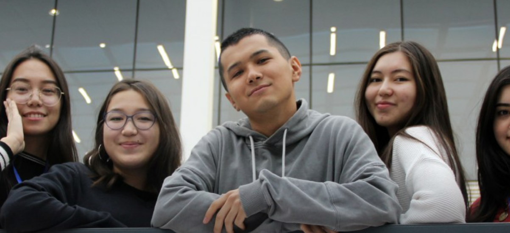
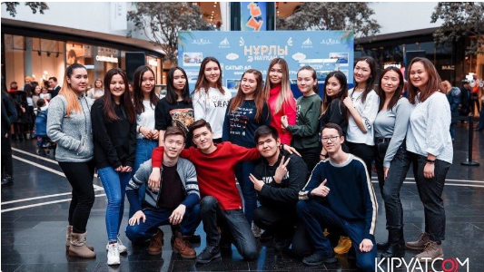
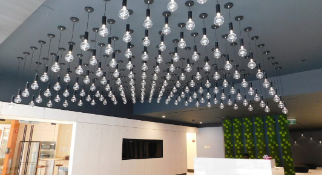
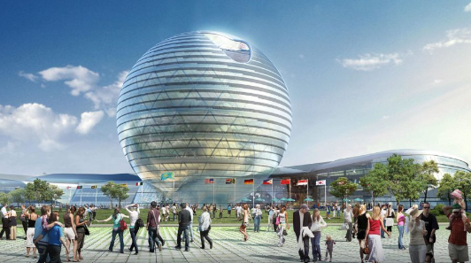

Student life of Astana IT University provides students with opportunities to develop diverse talents and explore possibilities for new passions. To foster students’ interests, Astana IT University offers a variety of extracurricular activities, preparing them with critical knowledge, skills, and opportunities to be leaders in an increasingly complex world. Student Life helps students to get involved in many large-scale events.

Many memorable moments at Astana IT University happen outside the classroom. Student clubs and organizations are a source for student development by fostering a learning environment that empowers students to engage and participate in a diverse array of enriching opportunities. With many student organizations, AITU lets you pursue the activities you’ve always loved, discover new passions and find people who share interests.

Astana It University provides a good quality of housing for its students. Our university is delighted to introduce students with an environment where we encourage them to self-realize and be more active in student life activities. Living in Student Housing is closely intertwined with the university and filled with various events and activities that are organized and conducted by advisors, the student council and students themselves.

Astana IT University is located in the EXPO Business Center and surrounded by Pavilion “Nur Alem”, International Financial Center “Astana”, International Technopark of IT startups “Astana Hub”, EXPO Congress Center, SEC MEGA Silk Way, “ASTANA BALLET” Theater, Hotel «Hilton» and Nazarbayev University.